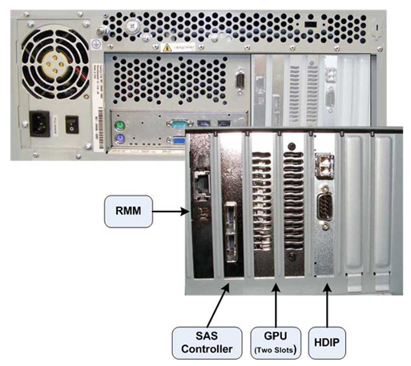
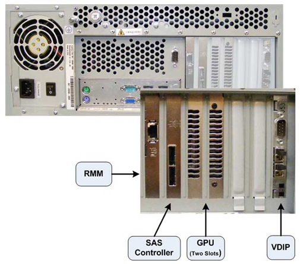
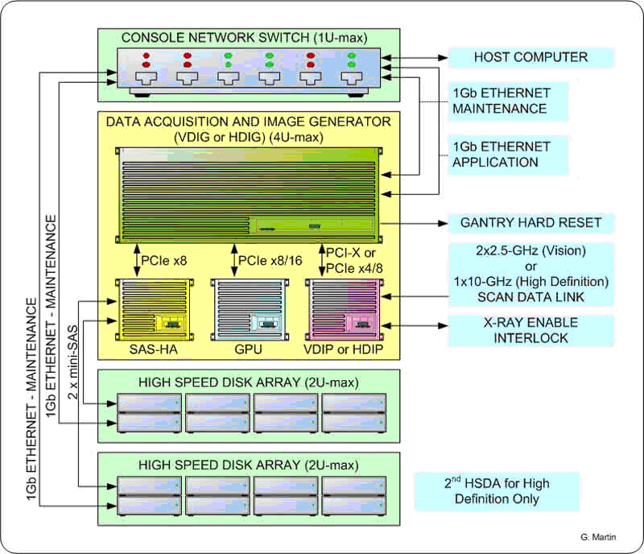
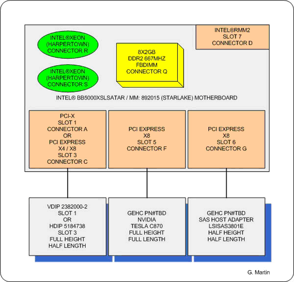
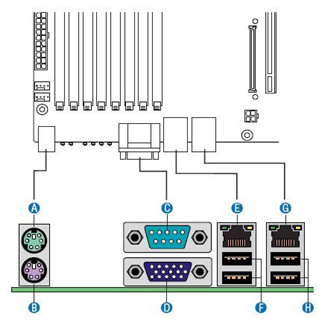
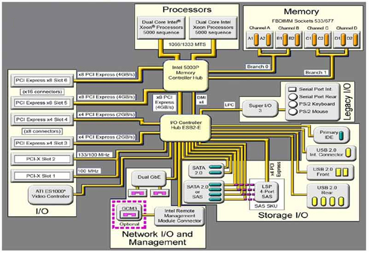
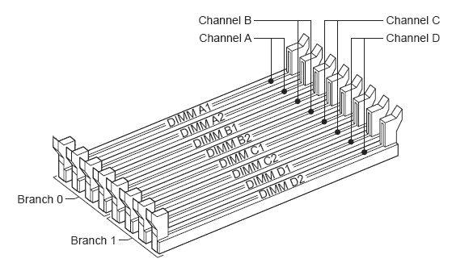
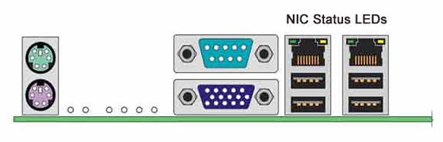
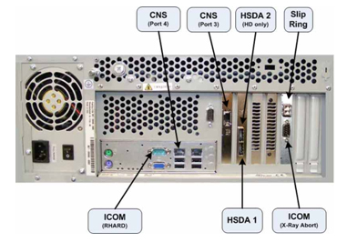
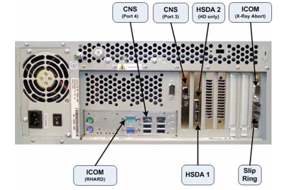

Proprietary to General Electric
Direction 5307452-8EN, Rev# 4
Discovery CT750 HD Service Methods - Adv
Proprietary to General Electric |
| Last Revised: | 30 September 2008 |
Illustration 1: DIG Computer

The Data Acquisition and Image Generation Computer (DIG) used in the Global Operator Console Series 6 (GOS 6) is a custom designed computer based on the Intel x86 multi-core processor server platform and manufactured by a third party vendor for GE Healthcare. The DIG Computer will have two configurations based on system utilization. The primary difference in the two DIG Computer configurations is based on the type of DAS Interface Processor (DIP) board installed inside the DIG Computer.
| DIG Computer Configuration | High Definition | VCT |
|---|---|---|
| HDIG | X | |
| VDIG | X |
The DIG computers serve two purposes: raw scan data save and image reconstruction. The raw scan data is transmitted from the Data Acquisition Subsystem (DAS), across the Slip Ring, to the DIG computer. The DIG Computer saves this data to a High Speed Disk Array (HSDA) and later retrieves it for image reconstruction.
Image reconstruction is performed on DIG Computer native processors and an add-in GPU card. The Data Acquisition and Reconstruction Computer (DARC) and Image Generation Computers (IGs) previously performed these functions in earlier versions of GOC console configurations. The DIG Computer communicates with the Host Computer through the Console Network Switch (CNS) and performs a remote boot through this connection.
Illustration 2: DIG Computer with HDIP Card (HD only)

Illustration 3: DIG Computer with VDIP Card (VCT)

Illustration 4: DIG Interconnect Diagram

The following is a brief theory overview of the hardware and software associated with the DIG Computers.
The DIG Computer is a two (2) Quad-Core Intel® Xeon® processor (Harpertown) based computer configured by GE Healthcare utilizing the Intel Starlake (S5000XSL) server class board.
Table 1: Basic Configuration
| Quantity | Description |
|---|---|
| 1 | Intel® Starlake (S5000XSL) server class systemboard |
| 8 | 2 GB, DDR2 ECC 667MHz PC5300 DIMM Memory Modules (total of 16 GB) |
| 1 | Nvidia® Tesla™ C780 GPU Card |
| 1 | SAS Controller Card, LSI Logic - LSISAS3801E |
| 1 | 400 Watt PSU |
| 1 | VCT DAS Interface Processor Board (VDIP) or High Definition DAS Interface Processor Board (HDIP – HD only) |
Illustration 5: DIG Computer Block Diagram

The systemboard contained in the DIG Computer utilizes the following integrated hardware.
Dual LGA Socket J (771-pin LGA) Multi-core Intel® Xeon® Processor Systemboard with:
2 Intel® Quad-core Zeon® (Harpertown) 2.33 GHz Processors w/4MB shared L2 Cache
Front Speed Buss of 1333 MHz
8 Memory Slots (32 GB max.)
Integrated
Video
2 x GBit NIC Ports
USB 2.0 Ports
SATA Hard Disk Controller
Remote Management Module (RMM)
Complete details of the Intel® Starlake (S5000XSL) server class systemboard can be obtained from Intel® support web site http://support.intel.com.
See Illustration 6 and Illustration 7 for Systemboard Layout.
Illustration 6: Intel® Starlake Systemboard Layout

Table 2: Systemboard Components
| Item | Description | Item | Description | Item | Description | Item | Description |
|---|---|---|---|---|---|---|---|
| A | PCI-X 100 MHz Slot 1 | M | System Fan 6 Header | Y | System Fan 2 Header | KK | SATA 2 or SAS 0 |
| B | PCI-X 133/100 MHz Slot 2 | N | System Fan 5 Header | Z | System Fan 1 Header | LL | SATA 3 or SAS 1 |
| C | PCI-E x8 Slot 3 | O | Main Power Connector | AA | Processor Power Connector | MM | SATA 4 or SAS 2 |
| D | RMM NIC Connector | P | Aux. Power Signal Connector | BB | USB Header | NN | SATA 5 or SAS 3 |
| E | PCI-E x8 Slot 4 | Q | DIMM Sockets | CC | IDE Connector | OO | USB Port |
| F | PCI-E x16 Slot 5 (x8 electrically) | R | Processor 1 Socket | DD | Enclosure Management SATA SGPIO Header | PP | Front Control Panel Header |
| G | PCI-E x16 Slot 6 (x8 electrically) | S | Processor 2 Socket | EE | Local Control Panel Header | SATA SW RAID 5 Key Connector | |
| H | CMOS Battery | T | Processor 2 Fan Header | FF | Hot-swap Backplane B Header | RR | SAS SW RAID 5 Key Connector |
| I | P12V4 Connector | U | Processor 1 Fan Header | GG | Enclosure Management SAS SES 12C Header | SS | Serial B / Emergency Management Port |
| J | Connector for RM Module | V | System Fan 4 Header | HH | Hot-swap Backplane A Header | TT | Chassis Intrusion Header |
| K | Back Panel I/O Ports | W | System Fan 3 Header | II | SATA 0 | ||
| L | Diagnostics and Identify LEDs | X | IPMB Connector | JJ | SATA 1 |
Illustration 7: Intel® Starlake ATX I/O Layout

Table 3: Systemboard ATX I/O Layout
| Item | Description | Item | Description |
|---|---|---|---|
| A | PS/2 Mouse | E | NIC Port 1 (1Gbit) |
| B | PS/2 Keyboard | F | USB Port 2 (top), 3 (bottom) |
| C | Serial Port | G | NIC Port 2 (1Gbit) |
| D | Video | H | USB Port 0 (top), 1 (bottom) |
Illustration 8: Intel® Starlake Systemboard Block Diagram

The DIG Computer is equipped to handle up to eight (8) fully buffered DIMM Memory Modules.
The base memory configuration contains eight (8) two (2) GB, DDR2 ECC 667MHz PC5300 DIMM Memory Modules (total of 16 GB).
See Illustration 9 for Memory Slot Assignment.
Illustration 9: DIG Memory Slot Assignment

Network interface support for the DIG computer is handled by an integrated Dual Gbit Ethernet controller on the DIG systemboard. Each network interface controller (NIC) drives two LEDs located on each network interface connector. The Link/Activity LED at the left of the connector indicates connection when on, and transmit / receive activity when blinking. The Speed LED at the right of the connector indicates data rate. See Table 3 for NIC LED status.
Illustration 10: NIC Status LEDs

Table 4: Systemboard NIC LED Status
| LED Color | LED State | NIC State |
|---|---|---|
| Green / Amber (Right) | Off | 10 Mbps |
| Green | 100 Mbps | |
| Amber | 1000 Mps | |
| Green (Left) | On | Active Connection |
| Blinking | Transmit / Receive activity |
The DIG Computer utilizes a Serial Attached SCSI (SAS) control card to interface the High Speed Disk Array/s and is installed in Slot 6 on the systemboard. This controller is responsible for directing raw acquisition scan data coming from the Data Acquisition Subsystem (DAS) to the HSDA and later retrieves the data for image reconstruction. The LSI™ Logic - LSISAS3801E card is a 3Gb miniSAS 8 -port host bus adapter. This host bus adapter supports large capacity external storage RAID and non-RAID enclosures by connecting a PCI Express bus with two external x4 SFF8088 miniSAS connectors.
The NVIDIA Tesla Graphics Processor card is the main image reconstruction processor in the GRE subsystem and supplies the same functionality as the RAC boards in previous generation of the GOC consoles. The Tesla C870 card utilizes the C870 GPU which is specifically designed to handle highly parallel computation, needed for image generation and reconstruction.
Tesla C870 GPU specifications:
One GPU (128 thread processors)
1.5 GB dedicated memory
Fits in one full-length, dual slot with one open PCI Express x16 slot
The HDIP card converts the optical signal received from the Gantry / DAS Sub-systems into electrical raw data and writes that data to one of the double buffers on the card. When the received data count reaches a predetermined value it will switch over to the other buffer. The DIG Computer then receives this data via the PCI bus.
• DAS Transfer Rate: 10 GBaud, single channel
The VDIP card converts the optical signal received from the Gantry / DAS Sub-systems into electrical raw data and writes that data to one of the double buffers on the card. When the received data count reaches a predetermined value it will switch over to the other buffer. The DIG Computer then receives this data via the PCI bus.
DAS Transfer Rate: 2.50 GBaud per channel.
For 32-slice configuration, use channel 1 for data transfer. Do not use channel 2.
For 64-slice configuration, use channel 1 for transferring data from DAS A-side, and channel 2 for transferring data from DAS B-side.
Optical fiber channel 1 and channel 2 cannot be swapped. When channel 1 or channel 2 has the wrong data for the channel, the VDIP will generate a PCI interrupt and show “incorrect channel connection” at the interrupt status register.
The DIG computer is equipped with a Remote Management Module (RMM), with its own dedicated Ethernet network access. The RMM is a self contained micro computer running operating and application software embedded within the firmware of the RMM card. As long as the standby power (3.3V) of the DIG computer’s power supply is present, the RMM will operate and allow access from the Host Computer.
The RMM in the DIG Computer provides the means for virtual presence (remote console) at the Host Computer. This presence includes keyboard, video and mouse redirection. By utilizing a RMM in the DIG Computer, an independent path for communication and hardware status checking can be established without the need of a fully functioning DIG Computer.
The RMM functionality replaces the Serial over LAN (SOL) functionality used in previous console generations. (See DIG Troubleshooting.
The DIG Computer is powered by a 400 Watts PSU. Rated voltage range 95–132 VAC and line frequency 50–60 (+/- 3) Hz, auto switching and power factor correction.
See Illustration 11 and Illustration 12 for Connection Labeling of the DIG Computer in the GOC 6 console.
Illustration 11: HDIG Computer Connections

Illustration 12: VDIG Computer Connections

The DIG OS and Application software is located on a dedicated Network File System on the Host Computer hard drive. Upon successful POST of the DIG Computer hardware, the DIG remote boots from this dedicated Network File System and loads the operation and application software to the DIG memory. The DIG Computer runs on a specifically configured GE Healthcare Linux OS and Application software, found on the Host Computer Operating Disk (/usr/g/darc).
The DIG Computer is equipped with a ROM-based initialization firmware that starts the server hardware. The BIOS of the computer is a collection of machine language programs stored as firmware in ROM. The BIOS ROM includes such functions as POST, PCI device initialization, Plug 'n Play support, power management activities, and the Computer Setup Utility. (See DIG BIOS Procedures (Adv).)